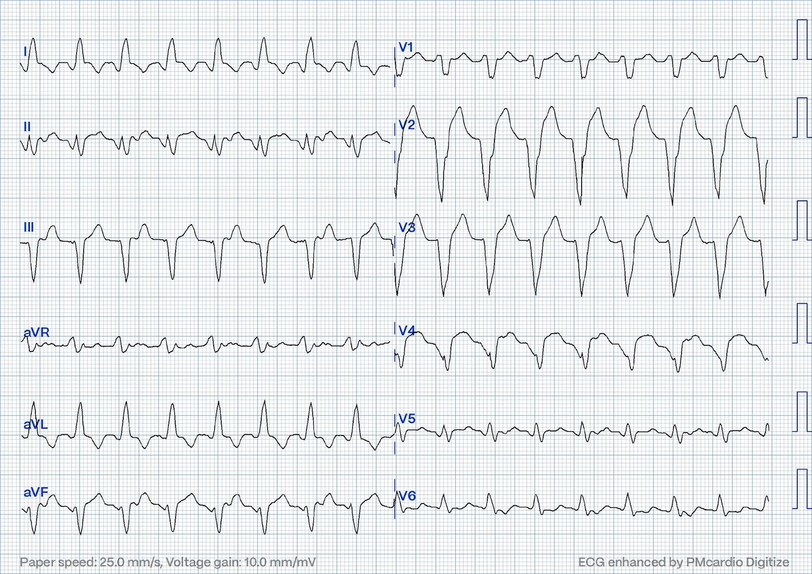
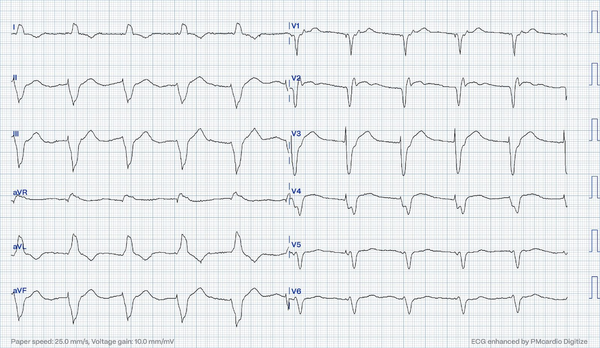
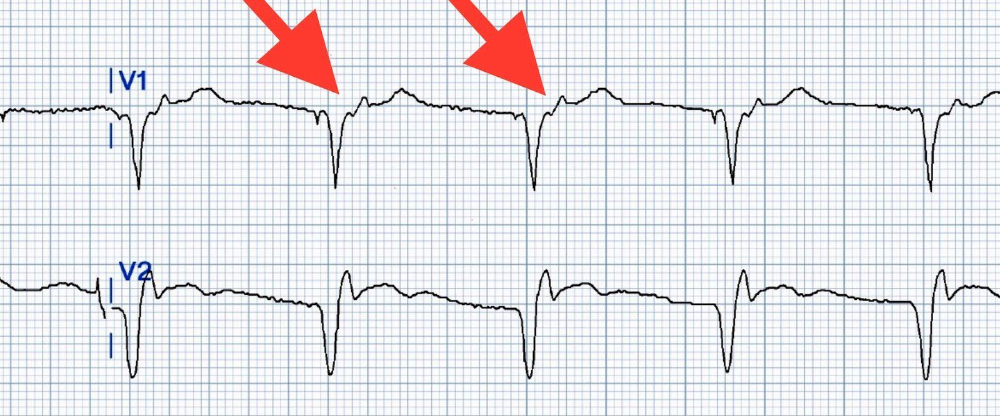
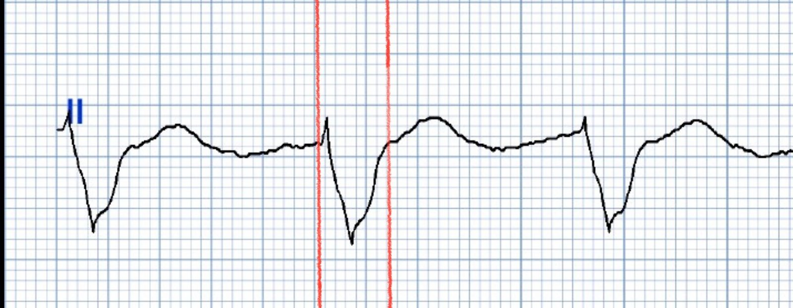
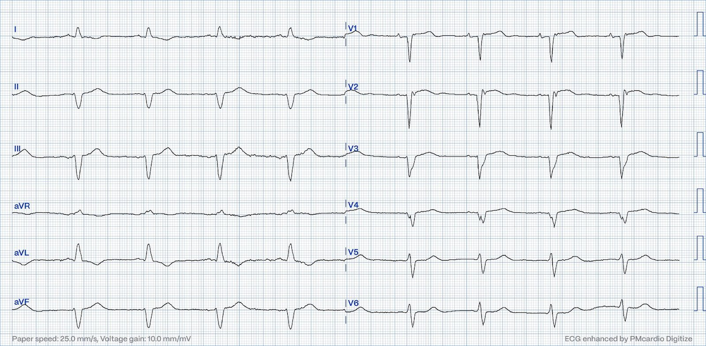
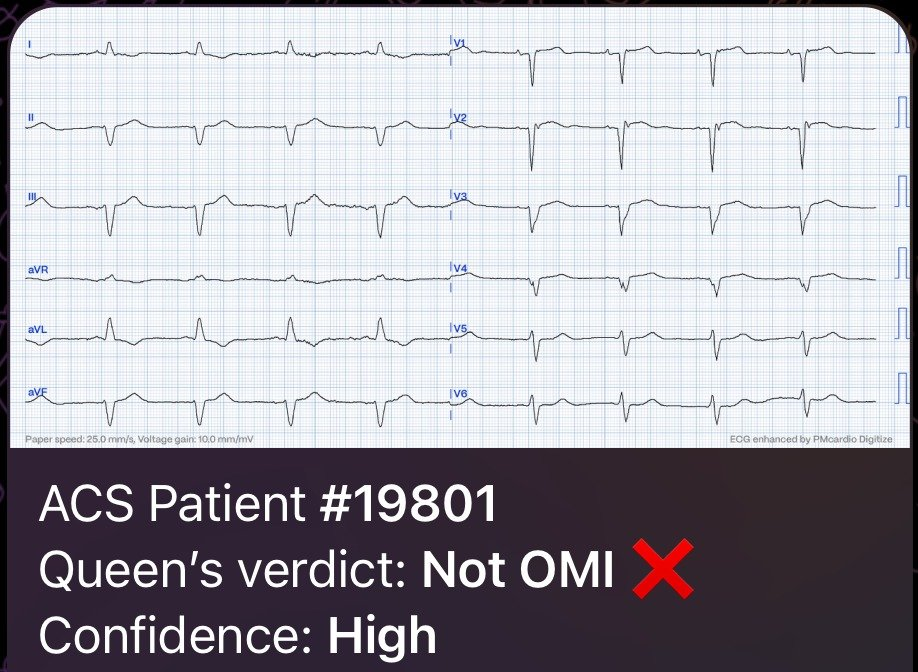
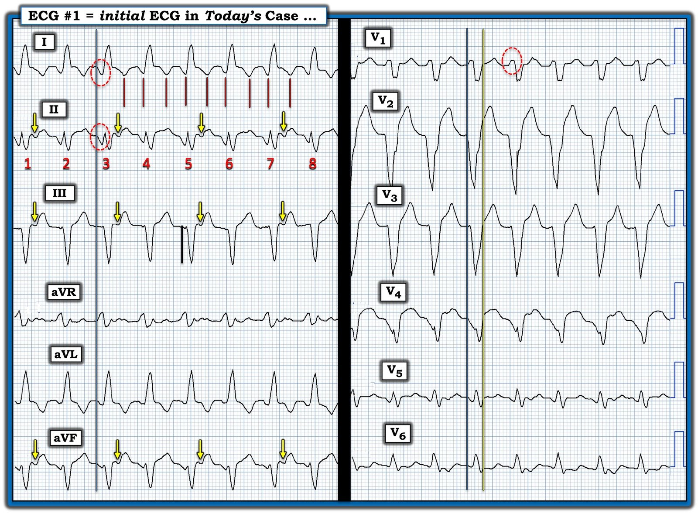

10/01/2024 — Một ca điện sinh lý hấp dẫn. Nhịp nhanh QRS rộng này là gì, và xử trí thế nào là tốt nhất?
Bản dịch tiếng Việt của bài "A fascinating electrophysiology case. What is this wide complex tachycardia, and how best to manage it?" – Dr. Smith’s ECG Blog. Giữ nguyên toàn bộ 8 hình ảnh của bản gốc.
Bài này do Magnus Nossen từ Na Uy viết
Bệnh nhân nữ, ngoài 80 tuổi, tiền sử nhồi máu cơ tim đã can thiệp mạch vành qua da (PCI) và đặt stent. Bà cũng có tiền sử rung nhĩ kịch phát và đang dùng thuốc chống đông đường uống. Bà được cấy một ICD/máy tạo nhịp một buồng từ vài năm trước do nhịp nhanh thất. Lần siêu âm tim gần nhất cách đây 12 tháng cho thấy suy tim phân suất tống máu giảm nhẹ (HFmrEF).
Bà đến khoa cấp cứu sau vài ngày cảm giác khó chịu ở ngực.
Điện tâm đồ dưới đây được ghi lại.


Bạn đánh giá thế nào? Bạn sẽ xử trí bệnh nhân này ra sao?
Điện tâm đồ được đọc là cuồng nhĩ dẫn truyền 2:1. Bệnh nhân được đánh giá là ổn định và quyết định truyền amiodarone tĩnh mạch. Bạn có đồng ý với chiến lược này không? Bạn có điều trị bệnh nhân theo cách nào khác không? Còn đoạn ST thì sao, chúng có làm bạn lo lắng không? Bạn có chắc chắn là không có thiếu máu cục bộ không? Làm sao để đánh giá đoạn ST tốt hơn?
Trả lời: Điện tâm đồ trên cho thấy một nhịp nhanh QRS rộng (WCT) đều. Tần số tim khoảng 130 nhịp/phút. Tần số tim này có thể phù hợp với cuồng nhĩ dẫn truyền 2:1. Ngoài ra, chuyển đạo I thoạt nhìn có thể gây ấn tượng là có sóng cuồng nhĩ. Tuy nhiên, khi xem kỹ hơn bản ghi, rõ ràng là hoạt động nhĩ không phù hợp với cuồng nhĩ. Hoạt động nhĩ thấy rõ ở các chuyển đạo dưới, nơi các sóng P đảo ngược nằm vùi trong đoạn ST cứ cách một nhát. Sóng P có cực tính âm ở các chuyển đạo dưới, nghĩa là chúng được dẫn truyền ngược dòng từ nút AV. Nói cách khác, điện tâm đồ cho thấy một nhịp nhanh thất khá chậm với dẫn truyền VA 2:1.
Nếu bệnh nhân ổn định huyết động, có thể cân nhắc amiodarone tĩnh mạch trong tình huống lâm sàng như vậy. Tuy nhiên, bệnh nhân này đang có cảm giác khó chịu ở ngực, và theo định nghĩa thì bà phải được xem là không ổn định.
Đây là:
1. VT nguyên phát, và VT với nhịp nhanh đang gây thiếu máu cục bộ kèm khó chịu ở ngực (mất cân bằng cung-cầu/nhồi máu cơ tim típ 2)? Hay
2. Thiếu máu cục bộ do hội chứng vành cấp (ACS) gây khó chịu ở ngực, còn VT là một hậu quả khác (hoặc chỉ là trùng hợp)?
Dù là trường hợp nào, sốc điện chuyển nhịp ngay đều được chỉ định.
Sốc điện chuyển nhịp sẽ giải quyết ngay vấn đề nhịp, đồng thời nếu cảm giác khó chịu ở ngực giảm đi khi nhịp xoang được khôi phục, thì khả năng thiếu máu cục bộ do ACS trở nên thấp hơn nhiều.
Điện tâm đồ ở nhịp xoang cũng sẽ dễ đánh giá hơn về mặt thiếu máu cục bộ
VT đã không được nhận ra và bệnh nhân được nhập viện, theo dõi từ xa (telemetry) và truyền amiodarone tĩnh mạch. Trong đêm, nhịp thay đổi. Bạn đọc điện tâm đồ dưới đây thế nào?


Điện tâm đồ trên cho thấy nhịp tạo nhịp thất với tần số tim 60. Gai tạo nhịp dễ thấy nhất ở các chuyển đạo dưới và các chuyển đạo trước tim đầu tiên. Có dẫn truyền ngược dòng qua nút AV với sóng P ngược dòng thấy rõ nhất chồng lên phần cuối QRS. (Dễ thấy nhất ở V1, mũi tên đỏ)


Sau khi VT chấm dứt, bệnh nhân bị tụt huyết áp, da lạnh và ẩm. Siêu âm tim tại giường cho thấy LVEF giảm nặng, khoảng 20-25%.
Tần số tạo nhịp được tăng lên nhưng lâm sàng không cải thiện và bệnh nhân được chuyển vào ICU để theo dõi/điều trị sát hơn. Khi nhìn vào điện tâm đồ trên, bạn sẽ thấy QRS sau tạo nhịp thất rất dài. Thời gian QRS đo ở chuyển đạo II (trình bày bên dưới) rộng khoảng 6.5 ô nhỏ (260ms). Như vậy là kéo dài rất nhiều. Thời gian QRS như vậy chắc chắn đi kèm với mất đồng bộ thất nghiêm trọng. Vì bệnh nhân có ICD/máy tạo nhịp một buồng, tạo nhịp thất cũng sẽ dẫn tới mất đồng bộ AV làm giảm đổ đầy thất, khiến huyết động càng suy giảm thêm.


Rõ ràng là tạo nhịp thất đang gây hại cho huyết động của bệnh nhân. Tần số dự phòng (back up rate) của ICD/máy tạo nhịp được hạ xuống 40/phút (VVI 40) nhằm thúc đẩy hoạt động nội tại và dẫn truyền AV nội tại.


Nhịp nhĩ nền của chính bệnh nhân lộ ra với tần số tim khoảng giữa 50 nhịp/phút.
Với sự đồng bộ AV và khử cực thất sinh lý, huyết động đã cải thiện.
Điện tâm đồ trên được ghi sau khi giới hạn tần số dưới (LRL) của ICD/máy tạo nhịp được đặt @40 nhịp/phút. Điện tâm đồ cho thấy nhiều khả năng là nhịp nhĩ lạc chỗ kèm blốc phân nhánh trái trước. Có sóng QS ở V1-V4 với phân mảnh/khía ở phần cuối QRS. Có ST chênh lên (STE) nhẹ.
Đây đều là những dấu hiệu có thể gặp ở phình thất trái.
Điện tâm đồ này không cho thấy bất kỳ dấu hiệu nào của OMI.
Việc đánh giá đoạn ST và sóng T tìm thay đổi thiếu máu cục bộ có thể được thực hiện tự tin hơn nhiều một khi nhịp bình thường và sự lan truyền xung động bình thường được khôi phục. Queen of Hearts cũng nhận ra rằng hình ảnh STE này không gợi ý thiếu máu cục bộ đang diễn ra và kết quả đọc của nó là KHÔNG phải OMI với độ tin cậy cao.


BẠN CŨNG CÓ THỂ CÓ BOT AI PM Cardio!! (ỨNG DỤNG AI OMI PM CARDIO)
Nếu bạn muốn bot này giúp bạn chẩn đoán sớm OMI và cứu bệnh nhân cùng cơ tim của họ, bạn có thể đăng ký để nhận bản beta sớm của bot tại đây. Ứng dụng chưa phát hành, nhưng đây là cách để bạn có tên trong danh sách.
https://share-eu1.hsforms.com/18cAH0ZK0RoiVG3RjC5dYdwfyfsg (biểu mẫu đăng ký nhận bản beta)
Tóm tắt: Bệnh nhân này có tắc hoàn toàn mạn tính (CTO) LAD từ nhiều năm trước, đã biết có phình thất trái (LVA) trên siêu âm tim. VT chậm dưới ngưỡng tần số phát hiện của ICD đã dẫn tới suy tim nặng lên và thể tích nhát bóp thấp. Cung lượng tim (CO) được duy trì nhờ nhịp nhanh. Sau chuyển nhịp VT, bệnh nhân bị suy tim cung lượng thấp, trở nên không ổn định và giảm tưới máu. Tạo nhịp thất gây hại về mặt huyết động. Hạ tần số dự phòng (LRL) của ICD/máy tạo nhịp đã cho phép xuất hiện nhịp nội tại với dẫn truyền AV sinh lý và đồng bộ AV bình thường, nhờ đó tăng thể tích nhát bóp và cung lượng tim. Sau khi nhịp nhĩ/nhịp xoang được khôi phục, bệnh nhân cải thiện dần. Điều trị nội khoa suy tim được tối ưu hóa và sau vài ngày bệnh nhân được xuất viện, chuyển tuyến để triệt đốt VT.
Những điểm cần học
*Bệnh nhân có rối loạn nhịp nhanh và khó chịu ở ngực cần được kiểm soát nhịp hoặc kiểm soát tần số ngay lập tức.
*Đôi khi tần số chậm hơn với dẫn truyền nội tại cho cung lượng tim (CO) tốt hơn so với tạo nhịp ở tần số cao hơn.
*Tạm thời hạ LRL của ICD/máy tạo nhịp có thể thúc đẩy khử cực nội tại, điều này có lợi khi đánh giá đoạn ST và sóng T tìm thiếu máu cục bộ.

===================================
BÌNH LUẬN CỦA TÔI, bởi KEN GRAUER, MD (10/1/2024):
===================================
Một bài viết rất sâu sắc của BS. Magnus Nossen — làm nổi bật nhiều điểm rất quan trọng.
- Bệnh nhân là một phụ nữ lớn tuổi có bệnh mạch vành đã biết và được cấy ICD-máy tạo nhịp do tiền sử VT (nhịp nhanh thất — Ventricular Tachycardia). Bệnh nhân cũng có tiền sử AFib và HFmrEF ( = suy tim phân suất tống máu giảm nhẹ — Heart Failure with Minimally-Reduced Ejection Fraction).
- Bệnh nhân này đến khoa cấp cứu (ED) “sau vài ngày cảm giác khó chịu ở ngực”.
Để rõ ràng, trong Hình 1 — tôi đã sao lại và đánh dấu điện tâm đồ ban đầu của bệnh nhân này.
CÂU HỎI:
- Bệnh nhân này đã ở trong VT BAO LÂU rồi?


SUY NGHĨ CỦA TÔI về CA BỆNH Hôm nay:
Tóm lại — Bệnh nhân hôm nay là một phụ nữ ngoài 80 tuổi, có bệnh mạch vành đã biết, suy tim đã biết và tiền sử VT — đến khoa cấp cứu “sau vài ngày cảm giác khó chịu ở ngực”. Bà được nhận định là ổn định huyết động vào thời điểm ghi điện tâm đồ #1 — và điện tâm đồ ban đầu này được đọc là AFlutter (cuồng nhĩ — Atrial Flutter) dẫn truyền AV 2:1. Do bác sĩ điều trị nhận định bệnh nhân ổn định huyết động với nhịp trong Hình 1 — bệnh nhân được bắt đầu dùng amiodarone tĩnh mạch, và được điều trị trong nhiều giờ cho tới khi nhịp ban đầu này thay đổi vào giữa đêm.
- Với tình huống trên — có rất nhiều điều để bình luận …
Bệnh nhân hôm nay có ổn định huyết động trong Hình 1 không?
Ưu tiên số 1 khi điều trị bất kỳ bệnh nhân nhịp nhanh nào — là xác định XEM bệnh nhân có ổn định huyết động không. Lý do là NẾU một bệnh nhân đang trong nhịp nhanh bền bỉ bị “mất ổn định huyết động” như một hậu quả trực tiếp của tần số nhanh — thì bất kể nhịp đó là SVT (nhịp nhanh trên thất — SupraVentricular Tachycardia) hay VT (nhịp nhanh thất — Ventricular Tachycardia) — đều có chỉ định sốc điện chuyển nhịp đồng bộ ngay lập tức.
- Dù hoàn toàn thừa nhận rằng “Đôi khi bạn phải có mặt tại chỗ!” — mới đánh giá bệnh nhân tối ưu được — định nghĩa lâm sàng của ổn định huyết động là bệnh nhân không có triệu chứng đáng kể như đau ngực, khó thở, tụt huyết áp và/hoặc thay đổi ý thức — do hậu quả trực tiếp của tần số tim nhanh.
- Như BS. Nossen đã nêu — việc bệnh nhân hôm nay có cảm giác khó chịu ở ngực đi kèm với nhịp trong Hình 1 — có nghĩa là theo định nghĩa, bệnh nhân này “mất ổn định“ huyết động — với chỉ định rõ ràng phải sốc điện chuyển nhịp ngay lập tức thay vì điều trị bằng amiodarone tĩnh mạch kéo dài nhiều giờ.
- Điểm MẤU CHỐT: Những đặc điểm bệnh sử khác trong ca hôm nay ủng hộ mạnh mẽ việc sốc điện chuyển nhịp càng sớm càng tốt gồm: i) Bệnh nhân lớn tuổi (tức là, người phụ nữ 80 tuổi này ít có khả năng chịu đựng bất kỳ nhịp nhanh bền bỉ nào trong thời gian dài); ii) Tiền sử bệnh đã biết gồm bệnh mạch vành, suy tim và VT bền bỉ đã được ghi nhận trước đây; — và, iii) Xác suất thống kê cho thấy ngay cả trước khi chúng ta nhìn vào điện tâm đồ của bệnh nhân này — đã có trên 90% khả năng bà đang trong VT bền bỉ.
Đâu là những MANH MỐI gợi ý VT trong Hình 1?
Điện tâm đồ trong Hình 1 phải được đọc là VT (nhịp nhanh thất — Ventricular Tachycardia) — cho tới khi chứng minh được điều ngược lại! Vì tôi đã bàn về các tiêu chuẩn dễ dùng và tiết kiệm thời gian mà tôi ưa chuộng để phân biệt nhịp VT với SVT (kèm BBB có sẵn hoặc dẫn truyền lệch hướng) — tôi xin giới thiệu những ai muốn tìm hiểu chi tiết hơn tới Bình luận của tôi trong các bài ngày 5 tháng Năm năm 2020 — ngày 2 tháng Tư năm 2022 — và ngày 14 tháng Hai năm 2022 trên Blog của Dr. Smith. Những lý do khiến tôi ước tính khả năng VT đối với nhịp trong Hình 1 là trên 90% gồm như sau.
- Điện tâm đồ ở Hình 1 là một WCT ( = nhịp nhanh QRS rộng, Wide-Complex Tachycardia) đều với tần số ~130/phút, không thấy rõ dấu hiệu của sóng P xoang. Theo y văn, xác suất tiền nghiệm để một WCT đều không có sóng P hóa ra là VT là ~80%. Con số này tăng lên tới xác suất tiền nghiệm ~90% — NẾU bệnh nhân “lớn tuổi” (tức là một người trưởng thành ở một độ tuổi “nhất định”) — và nếu bệnh nhân có bệnh tim nền. Do đó — xác suất thống kê để WCT đều không có sóng P ở Hình 1 hóa ra là VT là ít nhất 90%, ngay cả trước khi chúng ta nhìn vào điện tâm đồ thực tế!
- Vì gạch đầu dòng thứ 1 này — chúng ta cần luôn luôn giả định là VT đối với những nhịp như vậy cho đến khi chứng minh được điều ngược lại, và điều trị tương ứng. Điều này không có nghĩa là mọi bệnh nhân đều cần được sốc điện ngay lập tức — nhưng nó có nghĩa là vì 90+% những nhịp như vậy sẽ hóa ra là VT, chúng ta cần giả định là VT cho đến khi chứng minh được điều ngược lại. Các bác sĩ điều trị trong ca hôm nay đã không làm như vậy.
- Giờ khi chúng ta xem kỹ hơn điện tâm đồ #1 — các lý do khiến xác suất thống kê của VT tăng lên trên 95-98% trong ca hôm nay là: i) Phức bộ QRS cực kỳ rộng (Lấy đường thẳng đứng màu XANH LAM làm điểm bắt đầu của QRS — và đường thẳng đứng màu VÀNG làm điểm kết thúc của QRS — thời gian QRS >0.16 giây); ii) Có trục lệch gần như cực độ (tức là QRS âm hoàn toàn ở chuyển đạo III — dù không âm hoàn toàn ở chuyển đạo aVF); iii) Có sự chậm trễ trong hoạt hóa ban đầu (tức là Đặc biệt lưu ý phức bộ QS ở chuyển đạo V4 mất bao lâu để đạt tới điểm thấp nhất); và, iv) Hình thái QRS không giống bất kỳ dạng rối loạn dẫn truyền đã biết nào.
- Chính tiêu chuẩn cuối cùng này (tức là không giống bất kỳ dạng rối loạn dẫn truyền đã biết nào) — là điều gợi ý VT nhất đối với tôi trong ca hôm nay. Mặc dù thoạt nhìn hình thái QRS có nét giống dẫn truyền kiểu LBBB (do QRS dương ở các chuyển đạo I,aVL,V6 — và các phức bộ chủ yếu âm ở các chuyển đạo V1 đến V4) — xem xét kỹ hơn cho thấy hình thái cực kỳ không điển hình cho dẫn truyền kiểu LBBB ở nhiều chuyển đạo. Hình thái không điển hình rõ rệt này gồm: i) Sóng Q khởi đầu cực kỳ rộng ở các chuyển đạo I,II (trong các hình bầu dục chấm chấm màu ĐỎ ở những chuyển đạo này) — và ở aVL,V5,V6 (sóng Q rộng như thế này hầu như không bao giờ gặp với dẫn truyền trên thất ở các chuyển đạo này); — và, ii) Một sóng R khởi đầu rộng cực độ ở chuyển đạo V1 (trong hình bầu dục chấm chấm màu ĐỎ — hình thái này cũng hầu như không bao giờ gặp với dẫn truyền kiểu LBBB, vốn bình thường không bao giờ biểu hiện gì hơn một sóng r khởi đầu nhỏ, mảnh ở chuyển đạo V1).
- XIN NHẤN MẠNH: Xác suất thống kê trên 90-95% không giống với khả năng 100%. Hầu như luôn có khả năng ngoại lệ (tức là nhồi máu cũ hoặc bệnh cơ tim có thể dẫn tới một bản ghi nền rất bất thường). Nhưng khả năng trên 95% trong ca hôm nay ủng hộ sự cần thiết phải giả định là VT cho đến khi chứng minh được điều ngược lại.
Tại sao lại Sai khi Nghĩ Nhịp này là Cuồng nhĩ?
Tôi đã nhấn mạnh nhiều lần trên Dr. Smith’s ECG Blog rằng cuồng nhĩ cho đến nay (!) là rối loạn nhịp hay bị bỏ sót nhất (Xem Bình luận của tôi ở cuối trang trong bài ngày 1 tháng Năm năm 2023 — và bài ngày 12 tháng Mười Một năm 2019 trên blog, cùng nhiều bài khác). Tuy vậy — có bằng chứng mạnh mẽ ở Hình 1 cho chúng ta biết rằng ở đây không có cuồng nhĩ.
- Hoạt động nhĩ trong cuồng nhĩ cực kỳ đều — và thường biểu hiện hình “răng cưa” (sawtooth), hay gặp nhất ở một hoặc nhiều chuyển đạo sau = chuyển đạo II,III,aVF; aVR; và/hoặc chuyển đạo V1. Tuy nhiên, nhịp ở Hình 1 không có hình “răng cưa”. Bác sĩ điều trị đã nhầm 2 sóng lệch âm trong mỗi khoảng R-R của chuyển đạo I là “hoạt động cuồng nhĩ” — nhưng sẽ rất bất thường nếu chỉ thấy sóng cuồng nhĩ ở chuyển đạo I, mà không thấy ở bất kỳ chuyển đạo nào trong 5 chuyển đạo tôi nêu ở trên.
- Tôi đã vẽ các đường thẳng đứng màu ĐỎ dưới các sóng lệch âm của một loạt nhát bóp ở chuyển đạo I. Cần thấy ngay rằng khoảng cách giữa các đường thẳng đứng màu ĐỎ này không bằng nhau (trong khi với cuồng nhĩ — khoảng cách giữa một sóng cuồng nhĩ và sóng kế tiếp thường bằng nhau một cách chính xác).
- Thay vào đó (như Dr. Nossen đã nêu) — có dẫn truyền ngược dòng lên nhĩ ở cách một nhát, dưới dạng một sóng P âm xuất hiện ở một khoảng RP’ cố định sau mỗi phức bộ QRS cách một (các mũi tên màu VÀNG thấy ở từng chuyển đạo dưới). Blốc ngược dòng lên nhĩ 2:1 từng lúc này phù hợp với VT — nhưng loại trừ mọi khả năng cuồng nhĩ.
- ĐIỂM THEN CHỐT (PEARL): Tôi nhận thấy dùng compa đo (calipers) là cách tiết kiệm thời gian nhất để chẩn đoán cuồng nhĩ với độ chắc chắn tương đối từ một điện tâm đồ ban đầu. Xuất phát từ tiền đề rằng cuồng nhĩ luôn cần được cân nhắc cho đến khi chứng minh được điều ngược lại ở bất kỳ nhịp trên thất đều nào có tần số gần 150/phút (tức là khoảng 130-170/phút) khi không thấy rõ sóng P xoang — tôi đặt compa đo đúng bằng một nửa khoảng R-R. NẾU nhịp là cuồng nhĩ — thì hầu như lúc nào tôi cũng có thể “dò bước” chính xác hoạt động nhĩ 2:1 ở một hoặc nhiều chuyển đạo trên bản ghi. Dùng compa đo — tôi thực sự chỉ mất không quá vài giây để xác nhận dẫn truyền AV 2:1.
- Chuyển đạo Lewis: Sử dụng một hệ thống chuyển đạo khác là một ứng dụng dễ thực hiện nhưng hay bị quên — có thể rất hiệu quả để làm lộ ra hoạt động nhĩ nền vốn không thấy rõ trên bản ghi điện tâm đồ chuẩn (Vui lòng xem Hình cuối cùng của tôi trong bài ngày 12 tháng Mười Một năm 2019 trên Dr. Smith’s Blog để nhớ lại cách áp dụng chuyển đạo Lewis).
Bệnh nhân Hôm nay đã ở trong VT Bền bỉ trong BAO LÂU?
Nếu chúng ta quay lại Câu hỏi mà tôi đặt ra ngay từ đầu phần Bình luận của tôi — tôi đã hỏi bệnh nhân hôm nay đã ở trong VT trong BAO LÂU?
- Hãy nhớ rằng bệnh nhân này đến khoa cấp cứu (ED) “sau vài ngày khó chịu ở ngực”. Tần số tim trong nhịp WCT không quá nhanh (tức là ~130/phút). Và, có lẽ theo bệnh sử được cung cấp cho chúng ta — không có điện tâm đồ nào được ghi trong “vài ngày khó chịu ở ngực” cho đến khi bệnh nhân cuối cùng đến khoa cấp cứu, và điện tâm đồ #1 được ghi.
- Như tôi đã bàn trong Bình luận của tôi ở cuối trang trong bài ngày 2 tháng Tư năm 2022 trên Dr. Smith’s ECG Blog — tôi biết nhiều ca VT bền bỉ mà bệnh nhân vẫn tỉnh táo trong nhiều giờ. Tôi cũng biết một số ca (bao gồm một ca tại bệnh viện cũ của tôi) — trong đó bệnh nhân vẫn tỉnh táo khi đang ở trong VT bền bỉ suốt nhiều ngày! Do đó — chỉ vì một bệnh nhân vẫn tỉnh táo với huyết áp đủ trong một khoảng thời gian dài thì điều đó không loại trừ khả năng VT bền bỉ. Nếu tần số thất không quá nhanh — và bệnh nhân có chức năng thất trái tương đối tốt — thì hoàn toàn có thể vẫn ở trong VT bền bỉ trong nhiều giờ, thậm chí nhiều ngày.
- Y văn ủng hộ tiền đề rằng hoàn toàn có thể ở trong VT bền bỉ nhiều ngày liền (Symanski & Marriott — Heart-Lung 24:121,123, 1995). Trong báo cáo ca bệnh này — người phụ nữ 69 tuổi (người tình cờ có tiền sử cả bệnh mạch vành lẫn bệnh cơ tim) — đã ở trong VT bền bỉ suốt 5 ngày không có suy giảm huyết động. Trong thời gian này, bà được điều trị trong bệnh viện bằng nhiều thuốc chống loạn nhịp gồm Adenosine, Verapamil và Digoxin. Vào ngày nằm viện thứ 5 — bà được cho dùng Amiodarone, thuốc đã chuyển nhịp thành công. May mắn thay — bà đã “sống sót” qua liệu trình điều trị kể trên (vì mỗi thuốc trong 3 thuốc đầu tiên được dùng đều có thể gây tử vong, do khuynh hướng thúc đẩy VT xấu đi trong bối cảnh bệnh mạch vành nền nặng).
- XIN NHẤN MẠNH: Nghiên cứu ca bệnh này của Symanski và Marriott là từ năm 1995. Nhiều tiến bộ trong điều trị đã diễn ra trong 28 năm kể từ khi bài báo này được công bố. Tuy vậy — việc chẩn đoán sai các nhịp WCT vì chính những lý do mà các tác giả nêu ra vẫn còn quá phổ biến — vì vậy những bài học đưa ra trong bài báo năm 1995 này vẫn còn giá trị. Tôi ngờ rằng bệnh nhân trong ca hôm nay có thể đã ở trong VT bền bỉ kể từ khi bắt đầu khó chịu ở ngực, vốn khởi phát “vài ngày trước đó” — nhưng khả năng này đã bị gạt bỏ vì các bác sĩ của bà không tin rằng có ai có thể vẫn tỉnh táo và ổn định huyết động khi ở trong VT bền bỉ suốt “vài ngày”.